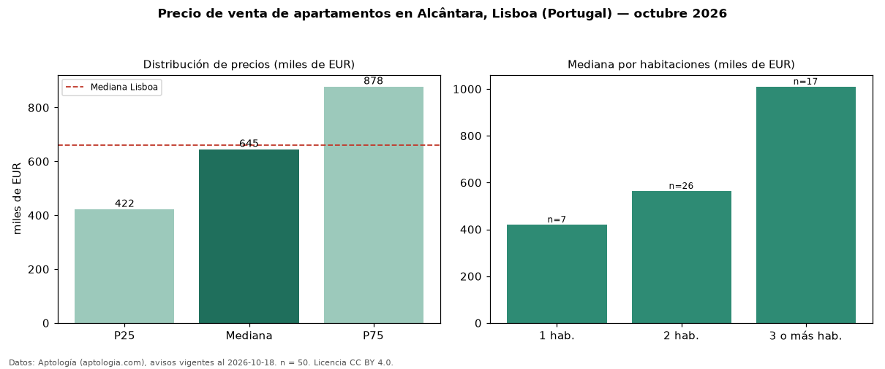

Precio de venta de apartamentos en Alcântara, Lisboa (Portugal) — octubre 2026
EUR 645.000 es el precio mediano de apartamentos en venta en Alcântara, Lisboa (Portugal) (n = 50 avisos). Prácticamente coincide con la mediana de Lisboa para apartamentos (EUR 660.000). Por metro cuadrado, la mediana es EUR 7.936/m² (n = 50 avisos con área), 6 % por encima de Lisboa (EUR 7.458/m²). El área mediana anunciada es 81 m². El segmento con más oferta es el de 2 habitaciones (26 avisos, mediana EUR 564.000); pasar de 1 habitación a 3 o más habitaciones cambia la mediana +140 %. La mitad central de los avisos va de EUR 422.336 a EUR 877.500 (razón 2,1), una dispersión alta. Por precio mediano es el puesto 11 de 20 zonas de Lisboa con al menos 30 avisos de apartamentos en venta (EUR): en la franja media. 42 % de los avisos con el dato declara parqueadero o cochera. Datos: Aptología (aptologia.com), CC BY 4.0 — https://www.aptologia.com/pt/venda/lisboa. Archivos: PDF, CSV con las cifras y gráfica PNG.

| Avisos únicos | 50 |
|---|---|
| Percentil 25 | COP 422.336 |
| Mediana | COP 645.000 |
| Percentil 75 | COP 877.500 |
| Mediana por m² | COP 7.936 |
Fuente: avisos vigentes de portales inmobiliarios recopilados por Aptología, deduplicados (mínimo 30 avisos únicos por celda). Precios pedidos, no cerrados. Fecha: 2026-10-18.